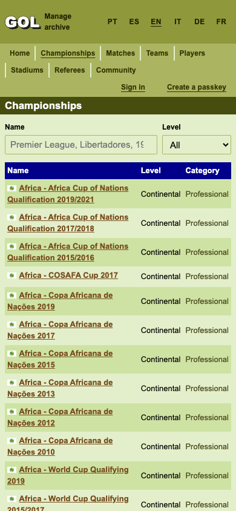
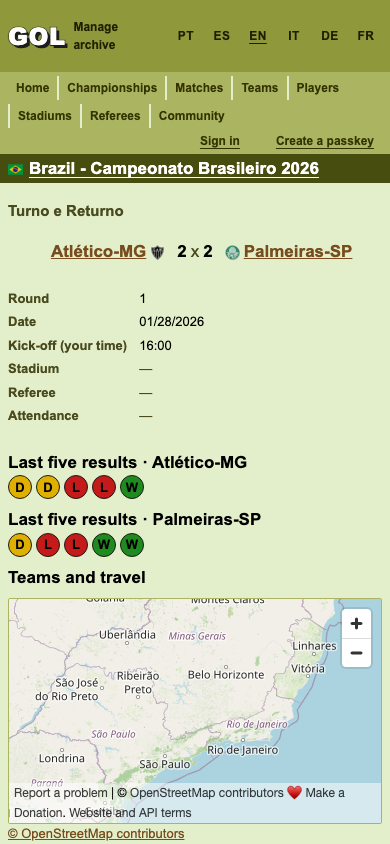
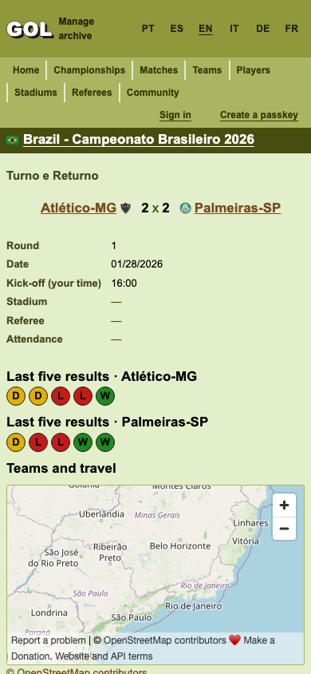

390 × 844 Chromium preview, 2026-10-28. The existing ir.html remains the design oracle. Production data and markup were loaded from golaberto.bonisoft3.com; the after previews substitute local CSS responses, including immutable stylesheet URLs. These are previews, not deployment evidence.
Shared championship headings, side navigation, table cells, home championship lists and scorer links now have the existing 24px minimum target height. Catalog targets were 15px high; match championship headings were 19px and scorer/lineup links were 15px. After the change, none of the measured links were below 24px in either dimension: championship catalog 40, match 52, home 30, teams 40, stadiums 40, referees 40. Measurements cover visible matching elements throughout each document, including below the screenshot fold. The first Portuguese teams request returned no content and was excluded; the English route supplied the 40 checked links.



The failed CI route discovery received empty player_stat responses before the asynchronous archive recount populated the table. Fresh fixtures now include all 885 unambiguous, active 2026 archive player statistics, using the same upstream counters already checked by the pipeline fixture. Existing insert triggers derive names, position and search text from joined parents. Startup recount and subsequent CDC updates remain authoritative. The seed regression checks parent joins, canonical IDs, exact eligible player membership and counter parity. PR CI must verify actual database initialization and joined-route rendering.